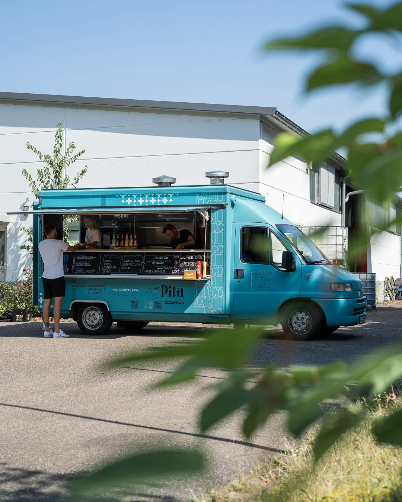
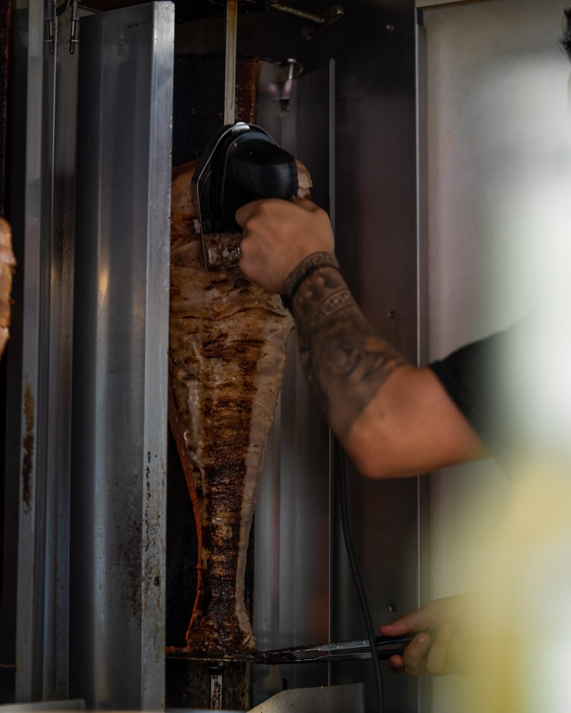
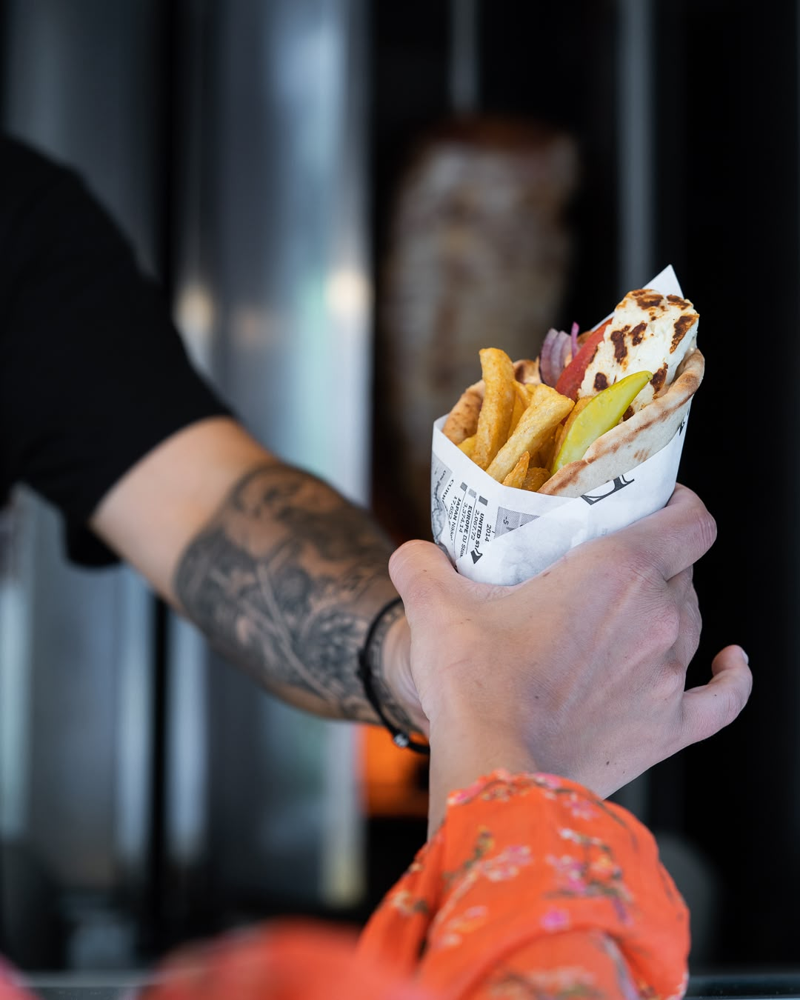
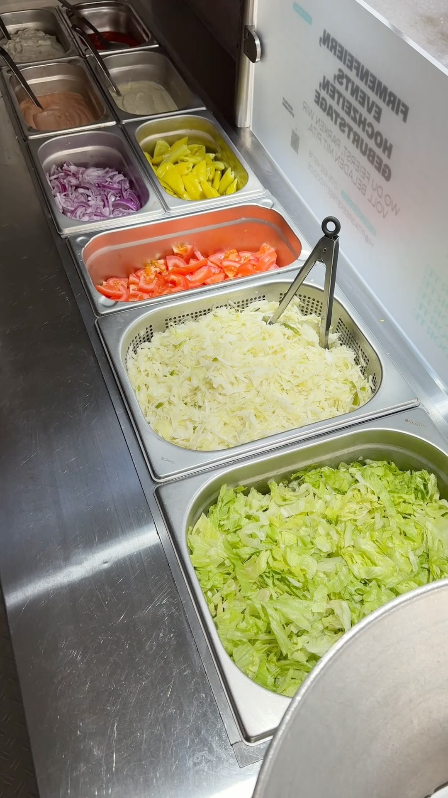
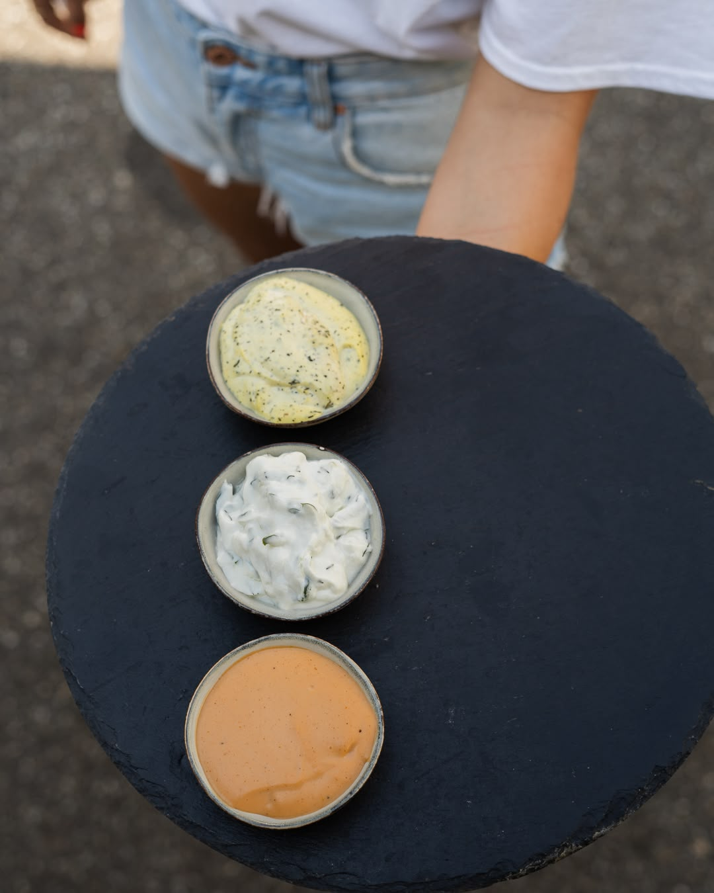

Foodtruck · Freiburg & Umgebung
Griechisch.
Frisch. Auf die Hand.
Pita, Gyros und Veggie-Varianten direkt aus unserem türkisen Foodtruck.

Wo wir heute stehen
Deine Mittagspause,
auf griechisch.
Regulär Montag bis Donnerstag von 10:00 bis 13:30 Uhr. Änderungen und Events geben wir auf Instagram bekannt.
Standort wird geladen
Standorte können sich kurzfristig ändern. Aktuelle Hinweise und Sondertermine findest du auf Instagram.
Einblicke
Frisch gemacht.
Direkt serviert.
Vom Drehspieß bis zur Ausgabe: ein paar echte Momente aus unserem Foodtruck-Alltag.




Pita kommt zu euch
Ein Foodtruck.
Ein Fest.
Greek Street Food für Firmenfeiern, Events, Hochzeiten und Geburtstage.
Wir bringen den Foodtruck, frische Pitas und entspannte Stimmung direkt zu eurer Veranstaltung. Details und Verfügbarkeit klären wir persönlich.
Catering anfragenKontakt
Lust auf Pita?
Für Catering, Events und alle Fragen erreicht ihr uns direkt. Keine Formulare, keine Umwege.